考虑做影像辨识，对于一张彩色照片，在PyTorch中的表达为一个3-D Tensor（宽-高-channel，通常三个channel代表RGB）。如果使用fully-connected-network，由于其feature非常多，parameter的数量也会非常大，很容易导致overfitting。因此，需要对model做出修改。
Receptive Field
考虑如下方法：
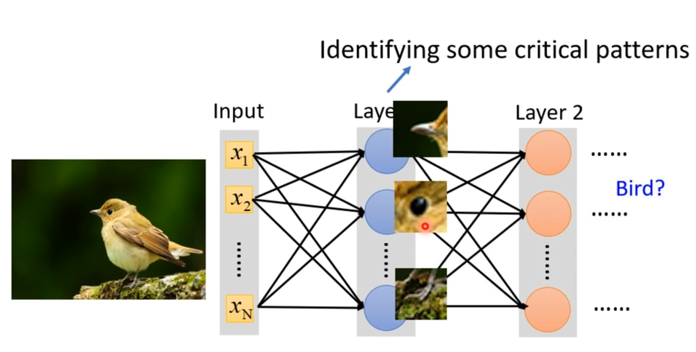
我们让每个neural只关心特定的一个区域（Receptive Field），如下图所示：
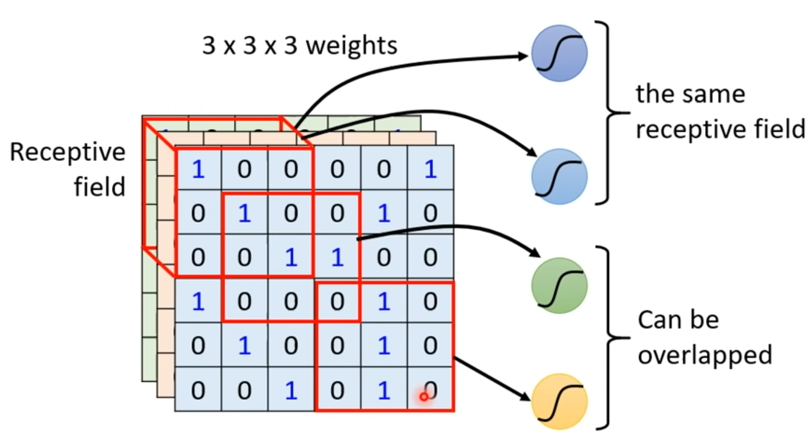
对于Receptive Field，可以有很多设计方法：不同大小、不同形状、不同channel…完全取决于个人需求。
[scode type=”green”]最常见的Receptive Field：all channels,3×3 kernel size[/scode]
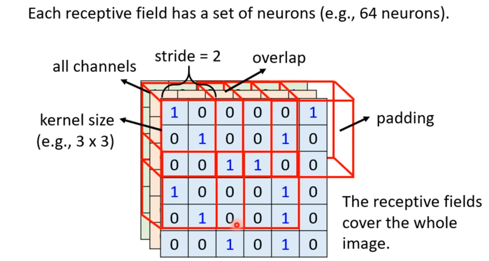
其中的stride是kernel的移动步长，padding为kernel移出image后补的数据（通常为0）。
Parameter Sharing
某一个特征（比如鸟喙）可能出现在图片的不同位置，因此需要在每个位置都需要设置一个“鸟喙detector”，这两个detector的parameter是完全一样的，确保它们能detect到同样的东西。这就叫Parameter Sharing。
对于每个Perceptive Field，有多个neural负责detect，每个Perceptive Field的neural共享相同的parameter；同一个Perceptive Field的neural的parameter是不同的。
每一组共享parameter的neural叫做一个filter。
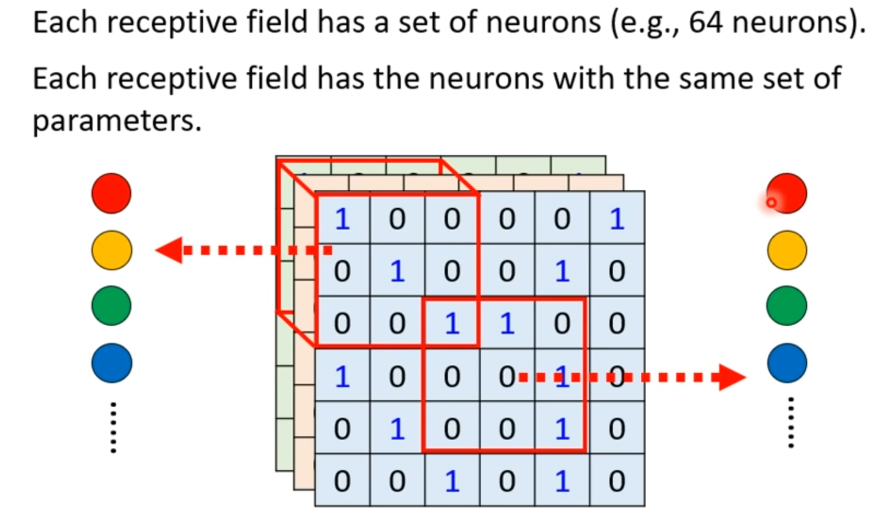
Convolutional Layer
总结一下，Fully Connected Network是最没有限制的Model；加上Receptive Field会增加一定的限制，缩小Model的范围；再加上Parameter Sharing后，其Model的范围会更小。
[scode type=”yellow”]Convolutional Layer的output叫做feature map[/scode]
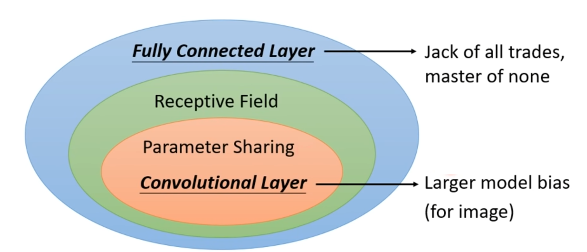
虽然加上Convolutional Layer，虽然Model bias更大了，但其是专门为影像辨识产生的，因此用在影像辨识上，效果很好。
[scode type=”green”]Receptive Field + Parameter Sharing = Convolutional Layer
使用了Convolutional Layer的network就叫做CNN[/scode]
Pooling
对于一张image，对其做pixel subsampling后（例如去除偶数的行列pixel），不会影响它是什么东西，subsampling就是Pooling。我们可以发现，Pooling的操作不需要学习什么parameter，因此很多人觉得它更像一个Activate Function。
以Max Pooling举例，它会在一个范围内选择其中最大的元素作为代表：
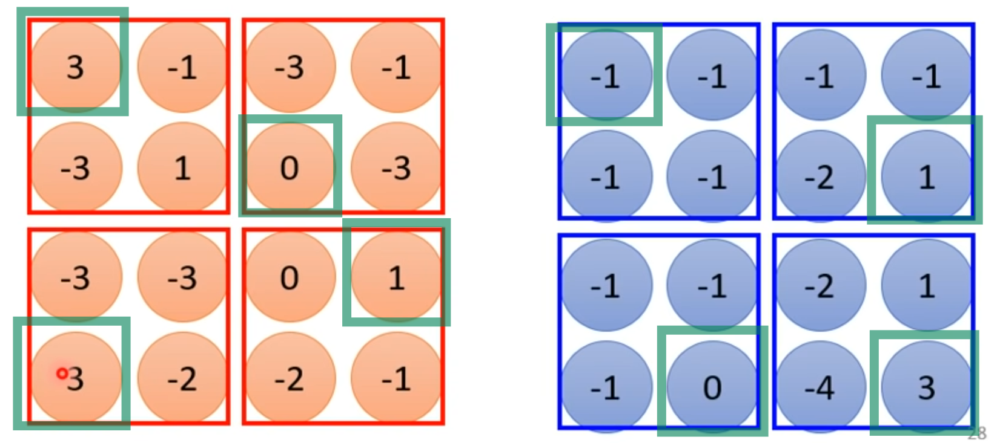
CNN实际应用
在实际进行影像辨识时，通常会选择Convolutional Layer + Pooling的方法。举例来说，对于一张输入的image，先通过一系列的Convolutional Layer和Pooling的组合，在丢进一个Fully Connected Network，最后经过一个Flatten和softmax，得到一个列向量，表示辨识结果。
实际上，Alpha Go也是使用了CNN。具体原理可以查看原论文《Mastering the game of Go with deep neural networks and tree search》
Spatial Transformer
CNN对于缩放和旋转图片的效果并不好，而Spatial Transformer能够解决CNN的这一问题。
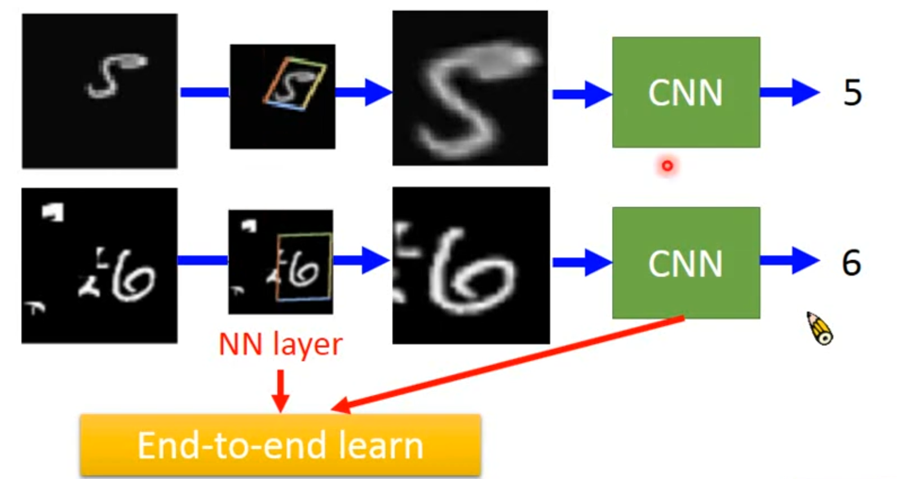
由于Spatial Transformer也是network种的一层，因此training的同时，同样可以使用Back Propagation的方法学习到其中的parameters。
那么Spatial Transformer是如何操作的呢？举个例子：
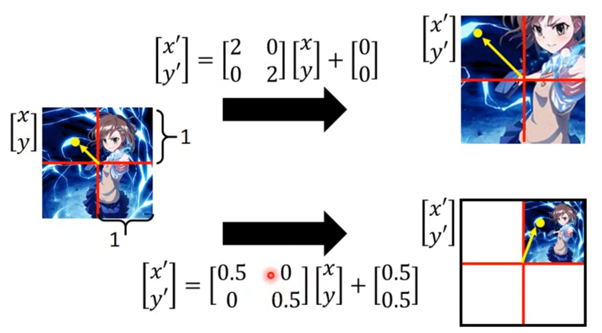
更普遍的来说，Spatial Transformer的原理如下：
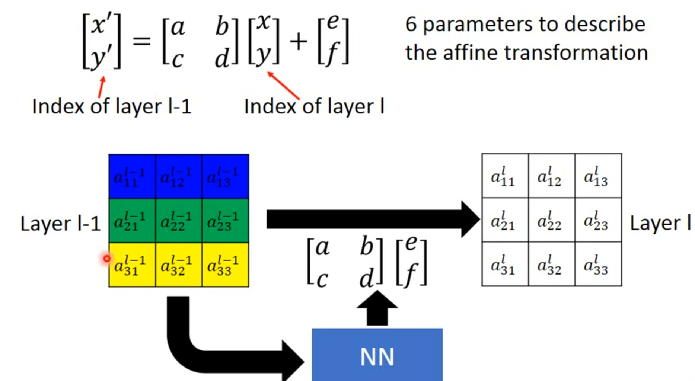
Spatial Transformer会output六个parameters$a,b,c,d,e,f$，这六个parameters决定了要对当前input做何种变换。
但实际中，output$a,b,c,d,e,f$的值不会是整数，这就导致$x^\prime,y^\prime$不会得到一个整数，解决方法为：Interpolation。
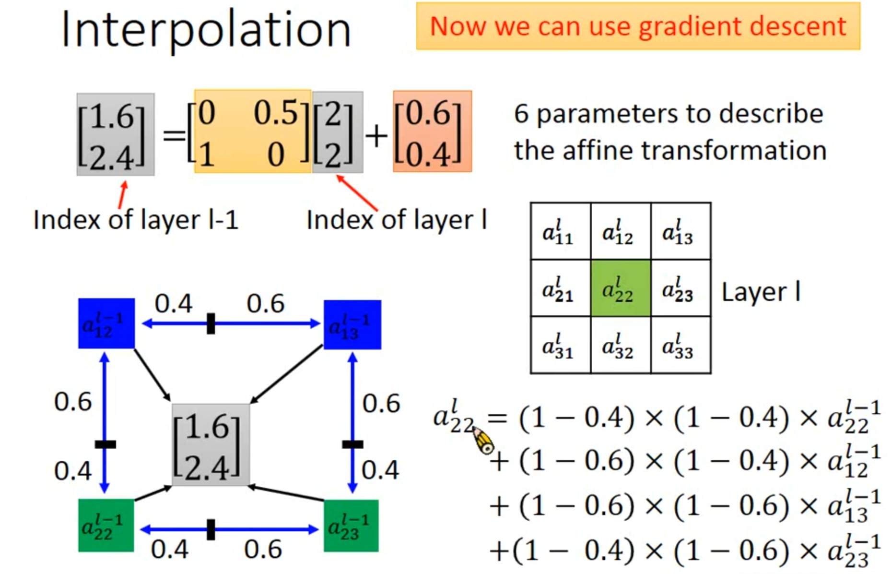
这样做相比于直接使用近的坐标的好处是：可以进行Gradient Descent。
实际应用举例：
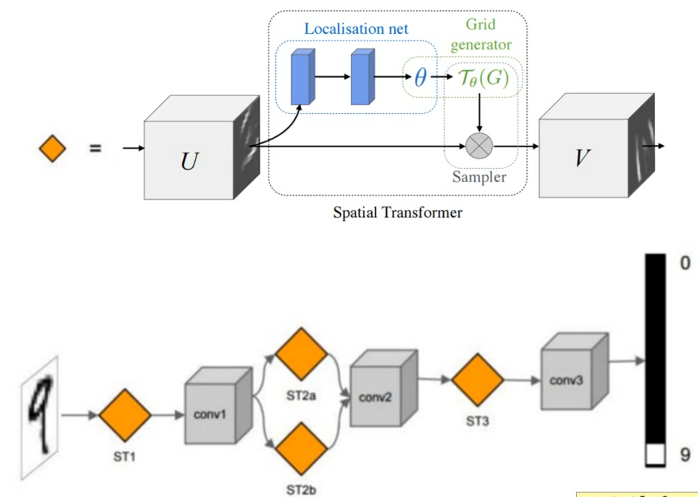
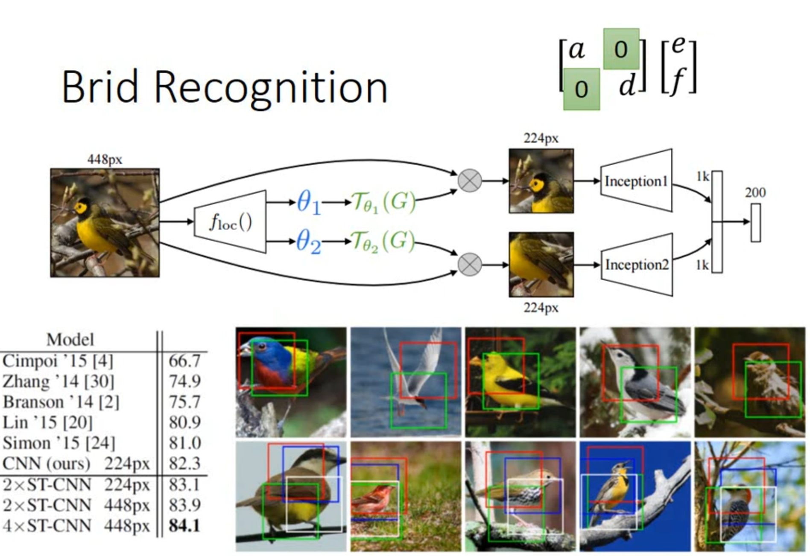